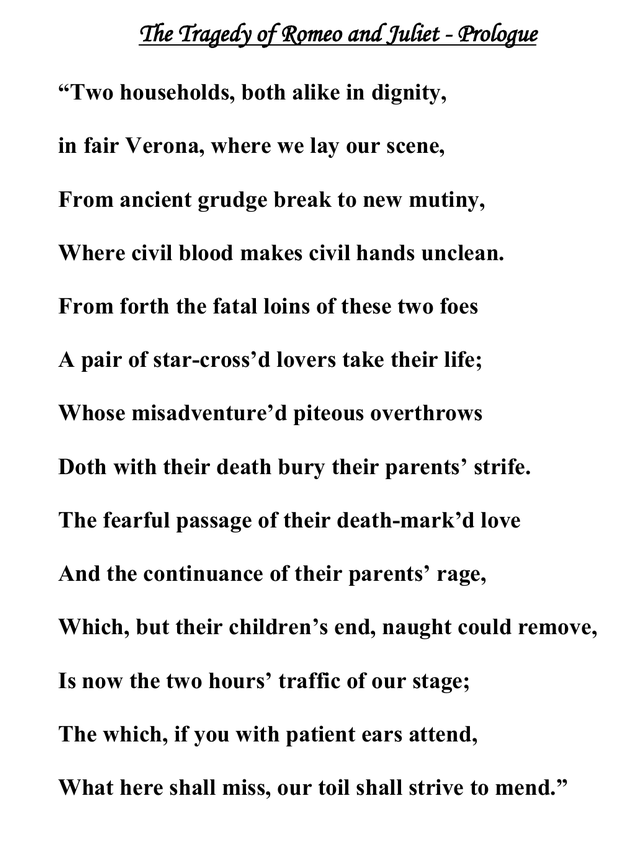

Literary Theories Application
Callout
Creative Task for Applying the Lenses
You are Meliora, a wizard living in the kingdom of Libraria. You have a staff and a spellbook. You finish your long journey and finally arrive at your castle, ready to rest.
Alas! Before you can finish warming the place with your conjured fireplace, three knocks come from the door…

A group of Libraria folk seek your help. There are 10 of them, each holding a scroll held by the Winter Queen’s royal seal and a box with curious embellishment.

“We are in dire need of your assistance, wise one.
We are the Queen’s advisors, and we are trying to avoid a war with another kingdom.
The only way to achieve peace is to interpret these texts using these enchanted lenses and unlock the hidden message.”
Indebted to the queen, you agree to help.
The Libraria folk line up, handing their scrolls and lens to your expert eyes.
Callout

You find out that the scrolls contained messages from different timelines. The first scroll has a poem by Dr. Seuss.
The lenses want you to answer the following questions to view it with New Criticism:
- How does the work use imagery to develop its symbols?
- How are the various parts of the work interconnected?
- How do paradox, irony, ambiguity, and tension work in the text?
- Is there a central or focal passage that can be said to sum up the work’s entirety?
Amazing!
The first one was completed with ease. Here comes the second with the lens for Archetypal Theory.
|
The scroll has the prologue for Romeo and Juliet, by William Shakespeare:  |
|
The lenses presented the following as a guide to help you identify some common archetypes:
|
Which archetype and what meaning is found in the excerpt?
On to the Next One!
This lens allows you to view this text with the Theory of Feminism.
It urges you to ask the following questions as you read the text:
- Is the author male or female?
- Is the text narrated by a male or female?
- What types of roles do women have in the text?
- Are the female characters the protagonists, or secondary and minor characters?
- Do any stereotypical characterizations of women appear?
- What are the attitudes held by the male characters, toward women?
- Is feminine imagery used? If so, what is the significance of such imagery?
- Do the female characters speak differently than the male characters?
|
Oho! This scroll is special. It speaks as you unravel the text: See the attached video and listen to the story. Then you will analyze the story from a feminist standpoint.
|
Callout
Three Scrolls Down!
One more coming up, and the lens this time, is from the Marxist Theory:
.png)
The lens guides you through the following questions on Marxism:
- Who has power? Who lacks power?
- What is the relationship between power and wealth?
- Who is exploited by whom and why?
- How does power remain constant or shift throughout a work of literature?
- What makes certain characters powerful or powerless?
What is your interpretation of the text, through the Marxist lens?
Next Up:
The lens for Moral/Didactic Theories.

Text to Analyze“Excerpt from Burning Bright” There remains only to mention a prediction that my Fire Chief, Beatty, made in 1953, halfway through my book. It had to do with books being burned without matches or fire. Because you don’t have to burn books, do you, if the world starts to fill up with nonreaders, nonlearners, nonknowers? If the world wide-screen-basketballs and footballs itself to drown in MTV, no Beattys are needed to ignite the kerosene or hunt the reader. If the primary grades suffer meltdown and vanish through the cracks and ventilators of the schoolroom, who, after a while, will know or care? All is not lost, of course. There is still time if we judge teachers, students, and parents, hold them accountable on the same scale, if we truly test teachers, students, and parents, if we make everyone responsible for quality, if we insure that by the end of its sixth year every child in every country can live in libraries to learn almost by osmosis, then our drug, street-gang, rape, and murder scores will suffer themselves near zero. But the Fire Chief, in mid-novel, says it all, predicting the one-minute TV commercial with three images per second and no respite from the bombardment. Listen to him, know what he says, then go sit with your child, open a book, and turn the page. |
|
Use these guiding questions as you find the right words to express your analysis through the moral/didactic lens.
|
|
Prepare your mind for this powerful scroll. The lens equips you with the following questions that will help you for your review through the Freudian lens.
It also guides you on the concept of words such as Id, Ego and Superego:
|
A pleasant surprise!
|
In the text is a question for discussion:
|
Callout
Wise one, here are the questions if you seek a biographical, psychological, or historical approach. Remember the words life, mind, and time.
|
Biographical |
Psychological |
Historical |
|
What verifiable aspects of the author’s biography show up in his/her work? Do places where the author grew up in appear in the text? |
How does the work reflect the writer’s psychology? How does the work reflect the unconscious dimensions of the writer’s mind? |
How does it reflect the time in which it was written? How accurately does the story depict the time in which it is set? What literary or historical influences helped to shape the form and content of the work? |
|
Biographical |
Psychological |
Historical |
|
How does the author weave aspects of his/her familial life into the literary text world? What distinguishes the author from his or her persona in the text? |
How does the work reflect the writer’s psychology? How does the work reflect the unconscious dimensions of the writer’s mind? |
What historical events or movements might have influenced this writer? How important is it the historical context (the work’s and the reader’s) in interpreting the work? |
|
The scrolls deliver the story of a text called “Frankenstein” by English author Mary Shelley. Watch the video and listen to the story. Then you will combine the Biographical, Psychological, and Historical lenses to analyze the text, and blast the scroll away.
Combine the Biographical, Psychological and Historical lenses to analyze “Frankenstein,” and blast the scroll away. |
Callout
The scrolls tear, and a white glowing page appears. It’s the last one. It speaks in a calm tone:
“I am the final scroll, and my meaning is up to you, the reader. Answer the following questions as I reveal the last line from The Great Gatsby by F. Scott Fitzgerald:”

Use one of the below prompts to help you answer the “Great Gatsby” scroll, based on the Reader Response Theory:
- What does the text have to do with you, personally, and with your past or present experiences?
- How much does the text agree or clash with your worldview?
- How well did you enjoy the text (or not)?
- As you finish uttering your final spell, a beam of light shoots out of the chimney and into the skies of Libraria.
- The sun starts shining again. The light has brought life into the kingdom, and has ignited the people’s hopes for peace. The people invite you to a feast in celebration of your achievement.
- You breathe a sigh of relief, pause to think and politely refuse.
- The merriment ahead is enticing, but this wizard needs some rest.
- The day is saved thanks to your proper application of Literary Theories.